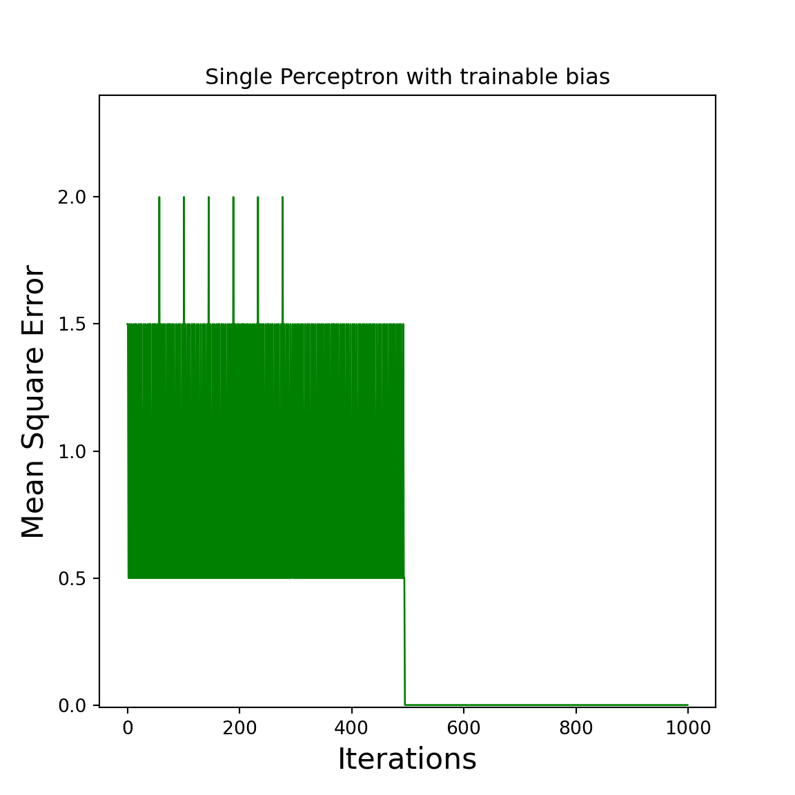

Chapter 3 Adding trainable Bias
The single Perceptron, you saw in the previews chapter had the following activation function: \[ step(s)= \begin{cases} 1,& s \geq \beta\\ 0,& s < \beta \end{cases} \] with \(\beta = 1\). It is the perfect \(\beta\) for the given training dataset. But what happens if you shift the training data for example adding \(-5\) to the \(X\) matrix? Now it will never find the correct answer. That is because you need to select the \(\beta\) accordingly. But this wouldn’t be intelligent to search for each dataset the optimal \(\beta\) by hand.
3.1 Generalising the Bias
First of all do we need to generalise the use of the bias, stating with the generalization of the activation function: \[ step(s)= \begin{cases} 1,& s \geq 0\\ 0,& s < 0 \end{cases} \] Now can we list it in the weighted sum: \[ step(X * W - \beta) = Y \] But we have the same problem as previews, because we need to specify the \(\beta\) explicit. Adding the bias to the training process is done by adding ones on the right side of the \(X\) matrix and adding the negative bias to the last row of \(W\). The output of one scenario is calculated as the following: \[ Y_i,_0 = step([X_i,_0 \cdot W_0,_0 + X_i,_1 \cdot W_1,_0 + X_i,_2 \cdot W_2,_0]) = step([X_i,_0 \cdot W_0,_0 + X_i,_1 \cdot W_1,_0 - \beta]) \] The resulting NN includes the bias into the re-adjusting process of the backward pass, because of that we will generate a random number for the bias that will be corrected anyway.
Now we have a NN that looks like all the other pictures of a single Perceptron in the internet:

The same step can be made with the following python code:
X = np.array([
[0,0],
[0,1],
[1,0],
[1,1],
])-5
X = np.append(X, np.array([np.ones(len(X))]).T, axis=1)
W = np.array([
[0.1],
[0.2]
])
W = np.append(W, -np.array([np.random.random(len(W[0]))]).T, axis=0)
print("X: \n", X)
print("W: \n", W)We added \(-5\) to the \(X\) matrix to simulate the problem of shifted data, added ones on the left side of \(X\) and added negative random numbers in \((0,1)\) to the weights. Yes, if you would have a clue, what \(\beta\) would be great for the given problem, its better to choose it explicit. The new NN is slower, because it needs to find a good \(\beta\) by it self.
3.2 Appendix (complete code)
The complete code is the following:
X = np.array([
[0,0],
[0,1],
[1,0],
[1,1],
]) - 5
X = np.append(X, np.array([np.ones(len(X))]).T, axis=1)
W = np.array([
[0.1],
[0.2]
])
W = np.append(W, -np.array([np.random.random(len(W[0]))]).T, axis=0)
Y = np.array([
[0],
[1],
[1],
[1]
])
alpha = 0.01
epochs = 1000
def step(s):
return( np.where(s >= 0, 1, 0) )
def forward(X, W):
return( step(X @ W) )
def backward(W, X, Y, alpha, Y_approx):
return(W + alpha * X.T @ (Y - Y_approx))
errors = []
for i in range(epochs):
Y_approx = forward(X, W)
errors.append(Y - Y_approx)
W = backward(W, X, Y, alpha, Y_approx)
def mean_square_error(error):
return( 0.5 * np.sum(error ** 2) )
mean_square_errors = np.array(list(map(mean_square_error, errors)))
def plot_error(errors, title):
x = list(range(len(errors)))
y = np.array(errors)
pyplot.figure(figsize=(6,6))
pyplot.plot(x, y, "g", linewidth=1)
pyplot.xlabel("Iterations", fontsize = 16)
pyplot.ylabel("Mean Square Error", fontsize = 16)
pyplot.title(title)
pyplot.ylim(-0.01,max(errors)*1.2)
pyplot.show()
plot_error(mean_square_errors, "Single Perceptron with trainable bias")